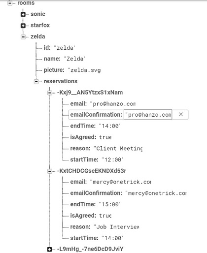
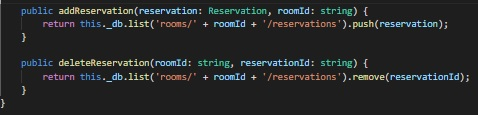
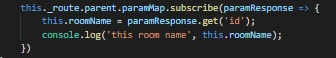
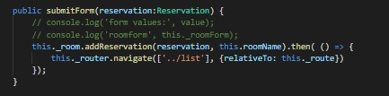

Now that our form and list look the way we want, its time to give them some functionaity. We want our form to write to our database and add to our reservations list. We also want our list to be able to delete reservations. While we could write the actual database call inside the component, it would make more sense for us to put the database methods inside our room service. This way, if we ever want to have another component to be able to write or delete, we can just call the method inside the service.
Let's go into our room.service.ts. We're going to create two methods, one to write and one to delete. We should have our AngularFireDatabase already brought in and injected in our constructor, so we can go right into our method creation:
public addReservation(reservation: Reservation, roomId: string) {
}
Easy stuff so far. Our method will take in two items, a roomId to let us know what room we're posting to and a reservation to actually push to the database. Now we can return our database call. Let's take a look at how our data is stored:
We can see the path that we need to follow: We start in the rooms directory, go into the room of our choosing (covered by the variable roomId that we're taking in), then the reservations subdirectory and push to that. Thankfully, our database call is that simple:
public addReservation(reservation: Reservation, roomId: string) {
return this._db.list('rooms/' + roomId + '/reservations').push(reservation);
}
Yep, all it takes is a .push with the data that we are going to push. We may as well do the delete method while we are here, but this is going to take in different values. Instead of taking in an entire reservation, we need to find one value that can reference a whichever reservation we want to delete.
And what value covers that? That's right, it's our id. You can see in the data tree that each reservation is preceded by a firebase key, and remember what we did with that key back in lesson 30? We tacked it onto our reservation as an id. That will come in handy later:
public deleteReservation(roomId: string, reservationId: string) {
}
We're taking in different values; now we're just taking in the id. We can use that id in our database call and just use .remove() on our firebase list:
public deleteReservation(roomId: string, reservationId: string) {
return this._db.list('/rooms/' + roomId + '/reservations').remove(reservationId);
}
That completes our method in the service. You probably already know this, but _db is the variable we assigned to our database when we injected it in the constructor. Your variable name may differ. Here's a screenshot of my two methods:
Now that we have our service methods, we need to call them in an appropriate place. We add reservations from our form, so that's a good place to start. Let's check out our submit method in our room.form.component.ts
So we know on submit that we want to add our reservation to the database, but is there anything else we want to do in addition to that? Is there any action you can imagine we might need after we click the submit button?
If we do nothing, we will stay at our form, allowing the user to spam the submit button. So let's navigate back to the list after a successfull add. Let's start with the service call first, comment out your console logs if you like, then add the following:
this._room.addReservation(reservation, this.roomName)
Our service method required two values. The first is the reservation that we are being passed from the form. Our roomId is being handled by the variable roomName, but have we set the value of that variable to actually hold our room?
You may have noticed in the earlier form lesson that there was a header that inside says *** INSERT ROOM NAME HERE ***. If you went ahead and completed that part, then you will have already done what we're about to do, good on you.
By now you should be familiar with how we get our room id, through paramMap. Remember that we need to use .parent to get the parameter from the base router since we are on a child route, similar to what we did in our room list. Here's the method I put inside the OnInit of our room form component:
I threw a console log in there just to verify that we are getting the room id, you don't have to put it in if you dont want.
Now we have our write method in the component passing the reservation from the form into our service. That takes care of the first half, but now we need to navigate away from our form upon completion.
Highlight the addReservation inside our room component and look at what VS Code gives you as far as information: It's not telling us what its returning (such as an observable), but it does mention that the function is Thenable. That may sound weird, but it means we can apply a .then and create a callback that executes whenever the database request is done. You may be familiar with .then if you have worked with promises; just know that this is behaving in a simlar fashion.
The .then handles the when part, but how do we navigate to another route? You might remember how from looking at our router guard, we use .navigate from the Router. We previously used navigateUrl, but we will be using navigate here.
You will need to include Router in your imports from @angular/router (You should already be importing ActivatedRoute as well). You will also need to injet it in your constructor, I gave mine the variable _router.
What's the difference between Router and ActivatedRoute
Activated route primarily deals with information on the route you are currently on. Router most often deals with the entire router, including command that can be issued, which is exactly what we will be doing.
I will show the end result of the router call and go over it with you.
We add a .then and inside the then we create an anonymous function. This function will be completed as soon as the reservation is done. Inside the function we call the router command navigate. This takes in an array, but we only want one destination, so there's only one value. You should be familiar with ../list; we're going back one level and then moving to the list component. But there's one issue:
The routers navigate command doesn't know what route we are currently on. That's where the relativeTo option comes in to play. We can pass it the current route that we are on, but is there anything that holds the information of the route that we are on? Hey, it's ActivatedRoute to the rescue, so I just pass in the activate route and we're solid.
With this method in place, our form should now write to the database. Test it out...